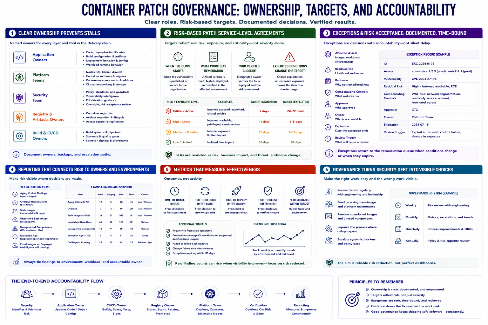

Governance, Ownership, and Metrics
Connecting to LMS... Progress: in progress

Narration
Clear ownership prevents findings from stalling between teams. Application owners usually manage code, dependencies, and deployment behavior. Platform teams manage nodes, runtimes, and Kubernetes components. Security maintains policy, intelligence, prioritization guidance, and oversight. Registries and build systems also need named owners.
Patch service-level agreements should reflect risk, exposure, and criticality rather than severity alone. Define when the clock starts, what counts as remediation, who verifies closure, and how newly exploited conditions change the target date.
Exceptions and risk acceptance are documented decisions, not silent delay. Record affected assets, residual risk, rationale, compensating controls, approver, owner, expiration, and review trigger. An exception should return to the remediation queue when its conditions change.
Reporting should connect vulnerabilities to deployed environments and owners. Useful views include aging critical findings, overdue items, stale images, unpatched base-image descendants, unsupported components, exception age, and the difference between fixed images and workloads still running old digests.
Metrics should measure effectiveness: time from disclosure to triage, rebuild, deployment, and verified closure; percentage remediated within target; recurrence caused by stale templates; production coverage; and failed or rolled-back updates. Raw finding counts can rise when visibility improves.
Governance turns security debt into visible choices. Review trends with engineering and leadership, fund recurring base-image and platform maintenance, remove abandoned artifacts, and improve the process where delays repeat. The aim is reliable risk reduction, not perfect dashboards.